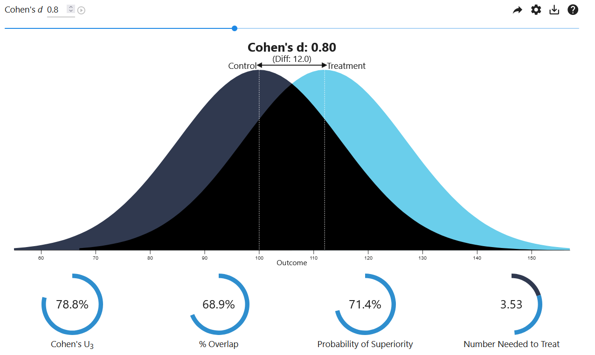

chapter: 9 効果量の解釈と利用
研究から得られた効果量の値がどのような意味を持つのかを解釈する方法には以下の4つのアプローチがある。
- 共通言語効果量（Common Language Effect Sizes）
- Cohenの規準（一般的なベンチマーク）
- 研究分野ごとの基準（分野固有のベンチマーク）
- メタ分析の参照
1つ目は、より解釈しやすい別の指標に変換して解釈する方法である。共通言語効果量と呼ばれる一連の指標を用いて確率的に効果量を解釈することが提案されている(McGraw & Wong, 1992)。2つ目は、効果量解釈の目安を示した一般的なベンチマークを参照することである。もっとも有名なベンチマークとしてはCohenによって提案された基準がある。しかし、研究デザインを考慮せずにベンチマークを機械的に当てはめることには多くの批判があり(e.g., Cummings, 2011; Kraft, 2020)、何よりもCohen自身がそのような使用法の問題点を認識していた(Cohen, 1988, p. 25)。3つ目は、各研究分野で一般的な効果量の大きさを参照するアプローチである。これもCohenの規準と同様の問題を抱えており、分野内でもテーマによって効果量分布が大きく異なることを考慮できていない。4つ目のアプローチは、関連する研究テーマの先行研究を統合したメタ分析の結果を参照する方法である。しかし、メタ分析も出版バイアスや問題のある研究実践（QRPs）の影響によって、効果量の分布を正しくとらえられているとは限らない。このように、効果量の解釈は非常に困難の伴う作業である。
9.1 共通言語効果量
共通言語効果量とは、効果量（標準化平均値差）を解釈する際の”共通言語”として用いることを意図して提案された指標であり、1．優越率（Probability of Superiority）、2．Cohen’s U3、3．被覆度（Overlap）から構成される。※優越率のみを共通言語効果量と呼ぶ文献もある。3つの指標の共通の仮定は、2つの群が等分散の正規分布に従うというものである。 3つの指標を順に解説する。
9.1.1 優越率（Probability of Superiority）
優越率とは、一方の群の観測値が他方の群の観測値を上回る確率である(南風原朝和, 2014; 南風原朝和 & 芝祐順, 1987)。別の表現をすれば、両群から1個体をランダムサンプリングして比較した場合に、実験群の個体の観測値が統制群を上回る確率である。2つの集団の観測値が等分散の正規分布A, B に独立に従う場合、優越率は以下の式で求められる。ここで、zは標準正規分布の確率点を指す。例えば、\(\delta=1\) の場合、標準正規分布において\(z<\frac{1}{\sqrt{2}}=0.707\) 以下となる確率なので\(\pi_d=0.76\) である。これは、標準化平均値差が \(\delta=1\) の場合、実験群が統制群を上回る確率が76%であることを意味している。
\[ \pi_d=P(z<\frac{\delta}{\sqrt{2}}) \]
9.1.2 Cohen’s U3
Cohen’s U3とは、第1グループ（実験群）の平均値より小さい第2グループ（統制群）の割合である(Cohen, 1988)。以下の図で示す通り、標準化平均値差が \(d_s=0.8\) の場合、実験群（水色）の平均（白線）を下回る統制群（紺色）の割合は78.8%である。Cohen’s U3は、統制群の中でどれくらいの割合が実験群の平均に満たない状況にあるのかを理解する上で有用な指標である。

9.1.3 被覆度（Overlap）
被覆度は2つの分布の重なる部分の面積であり、上図の黒色で表される部分である。被覆度が大きいほど2群間の差は小さく、\(\delta=0\) のときに被覆度は100%になる。
以下のサイトで3つの指標の関係を視覚的に確認することができる[https://rpsychologist.com/cohend/]。 また、Rを用いて以下のように共通言語効果量を計算できる。
# Common Language Effect Sizes
set.seed(123)
A <- rnorm(100, 60, 10)
B <- rnorm(100, 50, 10)
library(effectsize)
cohens_d(A, B)## Cohen's d | 95% CI
## ------------------------
## 1.27 | [0.97, 1.58]
##
## - Estimated using pooled SD.cles(A, B)## Parameter | Coefficient | 95% CI
## --------------------------------------------
## Pr(superiority) | 0.82 | [0.75, 0.87]
## Cohen's U3 | 0.90 | [0.83, 0.94]
## Overlap | 0.52 | [0.43, 0.63]ここまでの説明で分かる通り、共通言語効果量は効果量を確率で表現しているだけであって、その効果量がどのような意味を持つのかを教えてくれるわけではない。また、実際の母集団分布が正確に等分散の正規分布に従うわけでもない。よって、効果量の意味を解釈する際の参考値としての利用に留めるのが一般的である。
9.2 Cohenの規準
Cohen (1988) は、標準化効果量を解釈する際の目安となる基準を「小（small）」「中（medium）」「大（large）」の3段階で示している。例えば、標準化平均値差については、以下のような目安を提案している(Cohen, 1988, pp. 25–27)。
| d | 判定 |
|---|---|
| d = 0.2 | Small |
| d = 0.5 | Medium |
| d = 0.8 | Large |
Cohenの基準は行動科学分野の研究を通してこれまでに得られた効果量を参考にして作成された経験則であり、全ての分野において適応することを意図していたものではなかった。Cohenは、各分野で効果量を解釈するための参照基準がない場合のみ、この基準を参照するという使用法を想定していた(Cohen, 1988, p. 25)。しかしながら、本人の意図に反して、Cohenの基準は各分野での適応可能性が十分に吟味されることなく、機械的に使用されることが常態化していった。Lenth (2001) はこの使い方を「定型化効果量（“Canned” Effect Sizes）」と呼んで批判している。
Cohenの規準に基づいて効果量の大きさがいったん解釈されるとそれ以上の追加の解釈は行われず、効果量の持つ現実的な意味が見失われてしまう。仮に効果量の大きさが小さかったとしても、その発見は現実的に大きな意味を持つものかもしれない(Anvari et al., 2021)。例えば、産業分野では小さな効果量であっても、その生産工程の改善が大きな利益につながる可能性がある。疫学の分野では、小さの効果量であっても、多くの命を救うことに貢献する可能性がある。効果量が小さかったとしても、その介入を実施するコストが小さければ、それは実施する価値があるだろう。
また、現実的な意味が見いだしにくい基礎研究においても、効果量が小さいことが当たり前の分野においては、Cohenの基準で「中程度（Medium）」とされる効果量が大きな効果を持つものとして受け入れられるだろう。このように、その分野では大きいとみなされる効果が効果量の大きさそのものだけに着目することで小さいと判断される現象を Editors (2005) はアベルソンのパラドックス（Abelson’s paradox）と呼んでいる。分野ごとの効果量分布を無視して、Cohenの規準を常に当てはめることは効果量の持つ意味を分かりにくくする。
ところで、Cohenの規準が多くの分野の実際の効果量分布と適合しているのであれば問題はないかもしれないが、実際には適合していないことが多い。例えば、ソフトウェア工学分野の92の実験をレビューした Kampenes et al. (2007) は、効果量の分布が全体的にCohenの規準よりも大きいことを指摘している。このように分野における効果量分布がCohenの規準と適合していないのであれば、やはりCohenの規準の使用を正当化する理由はないだろう。
研究者は、得られた効果量を現実的な文脈や研究分野ごとの文脈に位置づけることでその実質的な意味を解釈すべきであり、Cohenの規準のようなベンチマークを機械的に当てはめて解釈を放棄することは望ましくない。しかしながら、Cohenの基準は今なお多くの研究で使い続けられている。そして、Cohenの基準を批判する研究者も、その後、Cohenの規準に代わるさらなるベンチマークを開発していくことになる。
9.3 分野ごとに細分化された規準
Cohenの規準への批判は、Cohenの規準に代わる新しいベンチマークを生み出すことにつながった。新しいベンチマークの修正の方向性は主に３点にまとめられる。１点目は、Cohenの基準の段階をより細かくすることである。２点目は、分野を限定し、過去の知見から経験的に段階を設定することである。
Sawilowsky (2009) は、近年のメタ分析によって得られた効果量の値が大きくなっていることを根拠に、Cohenの基準を以下のようにプラスの方向に拡張することを提案している。これは、従来のCohenの規準で大きいとみなされていた効果量をさらに細かく段階分けするという修正である。
| d | 判定 | d | 判定 |
|---|---|---|---|
| d < 0.1 | Tiny | 0.8 <= d < 1.2 | Large |
| 0.1 <= d < 0.2 | Very small | 1.2 <= d < 2 | Very large |
| 0.2 <= d < 0.5 | Small | d >= 2 | Huge |
| 0.5 <= d < 0.8 | Medium |
Gignac & Szodorai (2016) は、心理的な構成概念や行動の相関に関する708件のメタ分析を収集した結果、この分野の効果量分布はCohenの基準よりもより小さいものであることを明らかにした。そして、相関係数rの判断基準を以下のように修正することを提案した。これは、分野の実態に合わせて効果量分布をマイナス方向へシフトさせるという修正である。
| 判定 | Cohen (1988) | Gignac & Szodorai (2016) |
|---|---|---|
| Very small | r < 0.1 | r < 0.1 |
| Small | 0.1 <= r < 0.3 | 0.1 <= r < 0.2 |
| Moderate | 0.3 <= r < 0.5 | 0.2 <= r < 0.3 |
| Large | r >= 0.5 | r >= 0.3 |
その他にも、心理学(Funder & Ozer, 2019)や社会心理学(Lovakov & Agadullina, 2021)といった分野特有の規準が提案されてきた。また、老年学(Brydges, 2019)や教育介入(Kraft, 2020)といったより細かな分野ごとの基準も提案されている。
| Funder & Ozer (2019) | Lovakov & Agadullina (2021) | Kraft (2020) |
|---|---|---|
| r < 0.05 - Tiny | ||
| 0.05 <= r < 0.1 - Very small | r < 0.12 - Very small | |
| 0.1 <= r < 0.2 - Small | 0.12 <= r < 0.24 - Small | d < 0.05 - Small |
| 0.2 <= r < 0.3 - Medium | 0.24 <= r < 0.41 - Moderate | 0.05 <= d < 0.2 - Medium |
| 0.3 <= r < 0.4 - Large | r >= 0.41 - Large | 0.2 <= d - Large |
| r >= 0.4 - Very large |
しかし、各分野ごとの経験データから効果量の判断基準が作成されたからといって、それらが適切とは限らない。第一に、各分野の中でも研究テーマごとに効果量分布が大きく異なる可能性がある。第二に、集められた経験データそのものが歪められている可能性がある。例えば、Schäfer & Schwarz (2019) は心理学分野の研究からランダムに収集した効果量の分布が事前登録の有無によって異なることを指摘している。このように、判断基準の作成に使用されたデータが真の効果量分布を捉えていなければ、そこから作成された判断基準も誤ったものになる。
Rを使えば、各基準に基づいて効果量の大きさを判断できる。※ここまでの記述内容を踏まえて適切に使用すること。
# 平均値差のデータ
set.seed(123)
A <- rnorm(100, 55, 10)
B <- rnorm(100, 50, 10)
# Cohen's d_s
library(effectsize)
d <- cohens_d(A, B)
# Cohen (1988) の基準
interpret_cohens_d(d, rules = "cohen1988")## Cohen's d | 95% CI | Interpretation
## -----------------------------------------
## 0.74 | [0.45, 1.03] | medium
##
## - Estimated using pooled SD.
## - Interpretation rule: cohen1988# Sawilowsky (2009) の基準
interpret_cohens_d(d, rules = "sawilowsky2009")## Cohen's d | 95% CI | Interpretation
## -----------------------------------------
## 0.74 | [0.45, 1.03] | medium
##
## - Estimated using pooled SD.
## - Interpretation rule: sawilowsky2009# Gignac & Szodorai (2016) の基準
interpret_cohens_d(d$Cohens_d, rules = "gignac2016")## [1] "large"
## (Rules: gignac2016)# Lovakov & Agadullina (2021) の基準
interpret_cohens_d(d, rules = "lovakov2021")## Cohen's d | 95% CI | Interpretation
## -----------------------------------------
## 0.74 | [0.45, 1.03] | large
##
## - Estimated using pooled SD.
## - Interpretation rule: lovakov2021# 相関のデータ
library(mvtnorm)
set.seed(123)
sigma <- matrix(c(100,50,50,100), byrow=TRUE, ncol=2)
mu <- c(50, 60)
n <- 100
dat <- data.frame(rmvnorm(n=n, mean=mu, sigma=sigma))
# ピアソンの積率相関
library(correlation)
r <- correlation(dat)$r
# Cohen (1988) の基準
interpret_r(r, rules = "cohen1988")## [1] "moderate"
## (Rules: cohen1988)# Gignac & Szodorai (2016) の基準
interpret_r(r, rules = "gignac2016")## [1] "large"
## (Rules: gignac2016)# Funder & Ozer (2019) の基準
interpret_r(r, rules = "funder2019")## [1] "large"
## (Rules: funder2019)